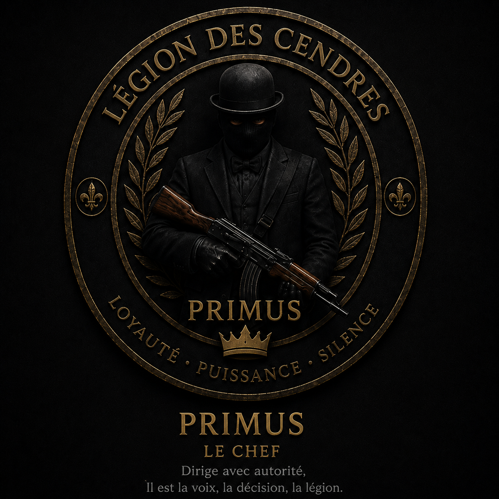
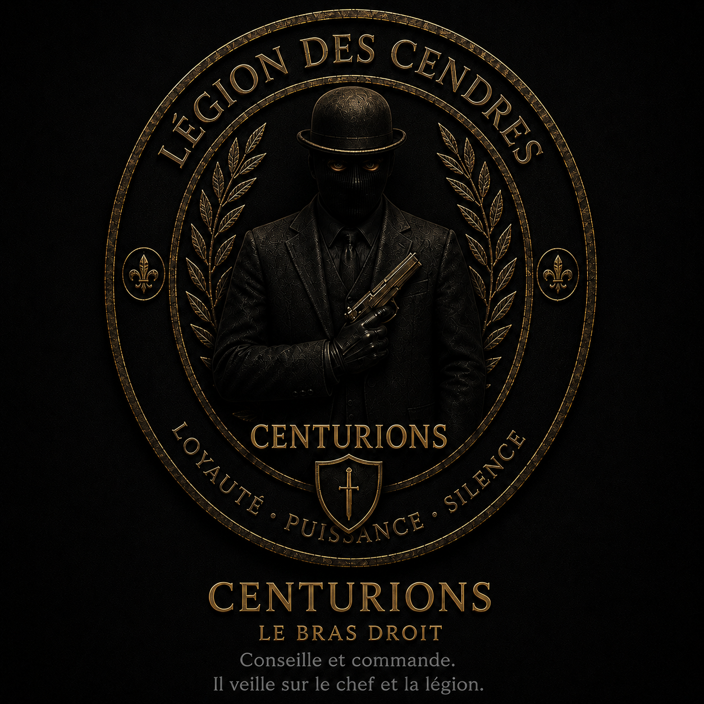
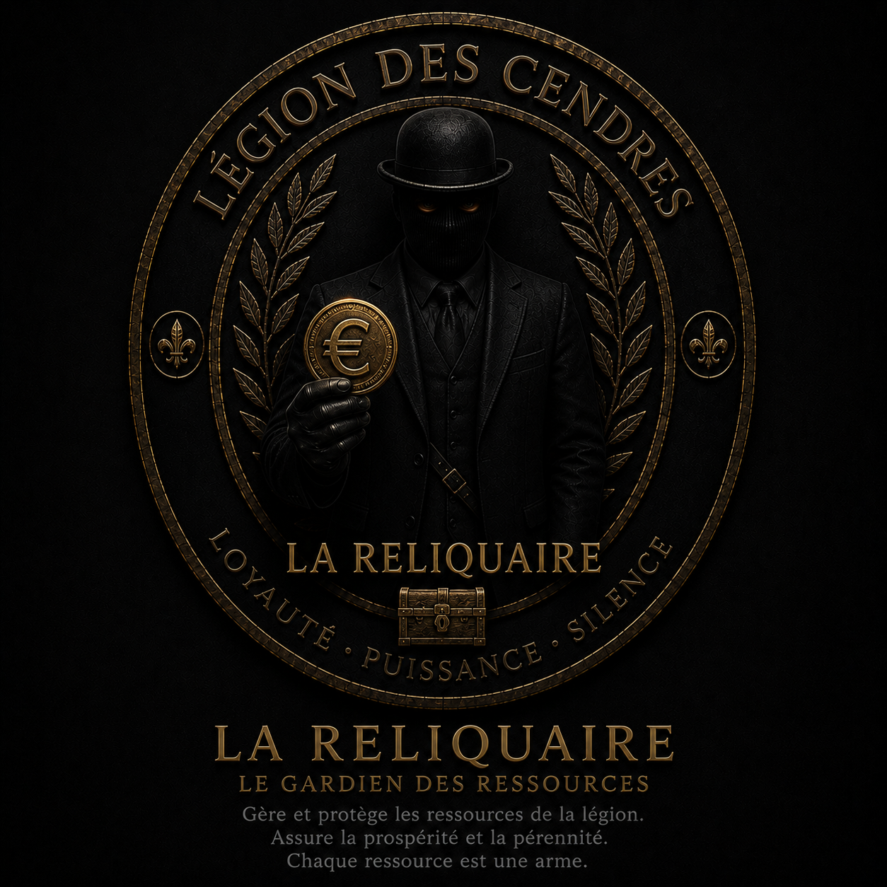
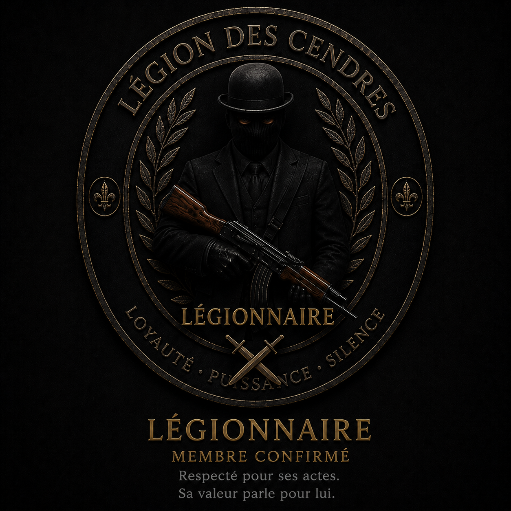
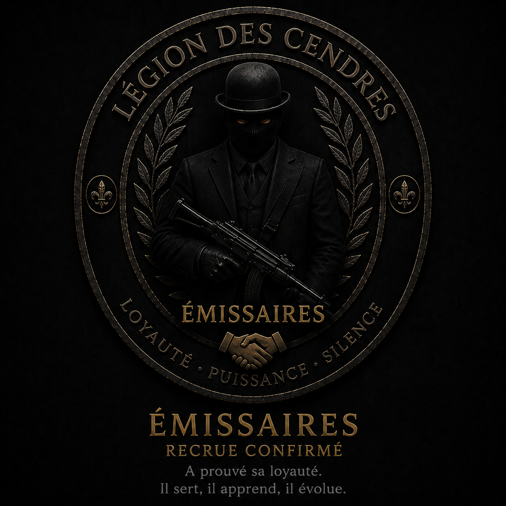
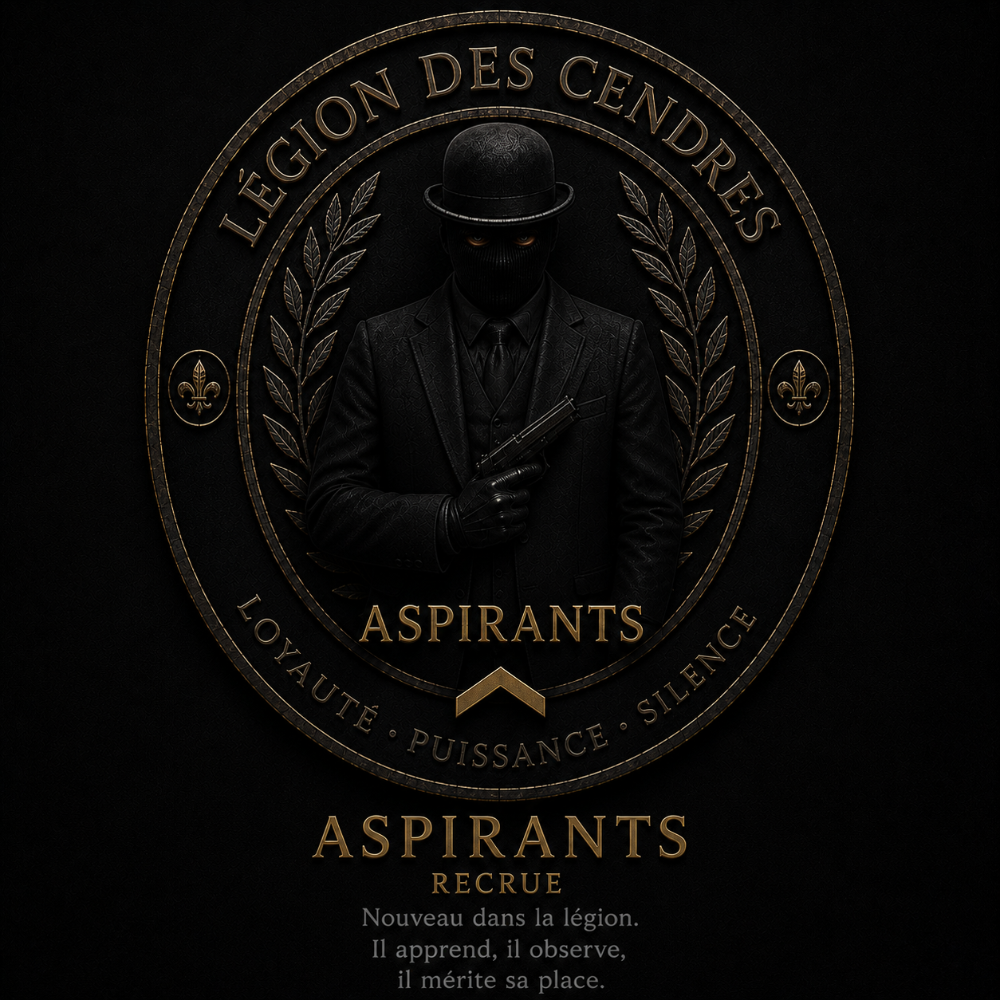

Au début des années 2000, la France lança une offensive sans précédent contre le crime organisé. Les grandes familles tombèrent les unes après les autres, les réseaux se disloquèrent, et l’État proclama la fin d’une époque. Pourtant, dans les interstices laissés par ces purges, certains refusèrent de disparaître. Anciens trafiquants, soldats perdus, mercenaires sans bannière et criminels aguerris se retrouvèrent unis par un même point commun : ils avaient tout perdu, sauf leur instinct de survie.
C’est dans un hangar abandonné, quelque part entre Paris et la frontière belge, que ces survivants se réunirent pour la première fois. Autour d’une table marquée par le temps, ils firent un pacte : ne plus être les vestiges d’organisations détruites, mais devenir une force nouvelle, disciplinée, silencieuse et impossible à briser. Ils n’étaient plus que des cendres… mais des cendres encore brûlantes.
Ainsi naquit la Légion des Cendres : une organisation façonnée par la perte, guidée par une loyauté absolue et animée par une volonté farouche de ne jamais redevenir vulnérable. Depuis, la Légion avance dans l’ombre, invisible mais omniprésente, préférant l’influence discrète à la lumière, et laissant derrière elle une certitude : la puissance ne se montre pas, elle se ressent.
Une famille choisie. Une confiance absolue.
Discipline. Intelligence. Maîtrise.
Observer. Comprendre. Agir.






Nous ne recherchons pas les plus bruyants. Nous recherchons les plus déterminés.